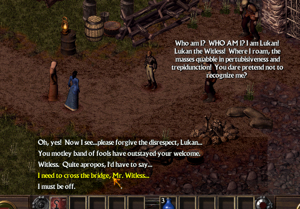
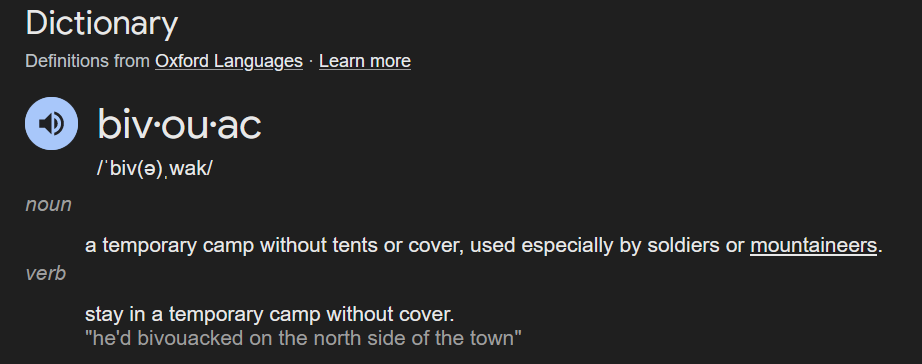
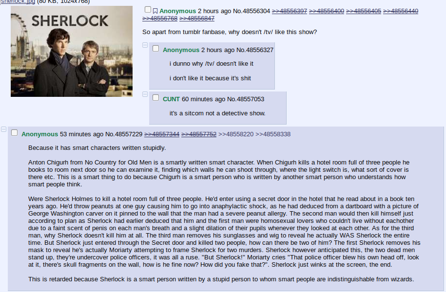
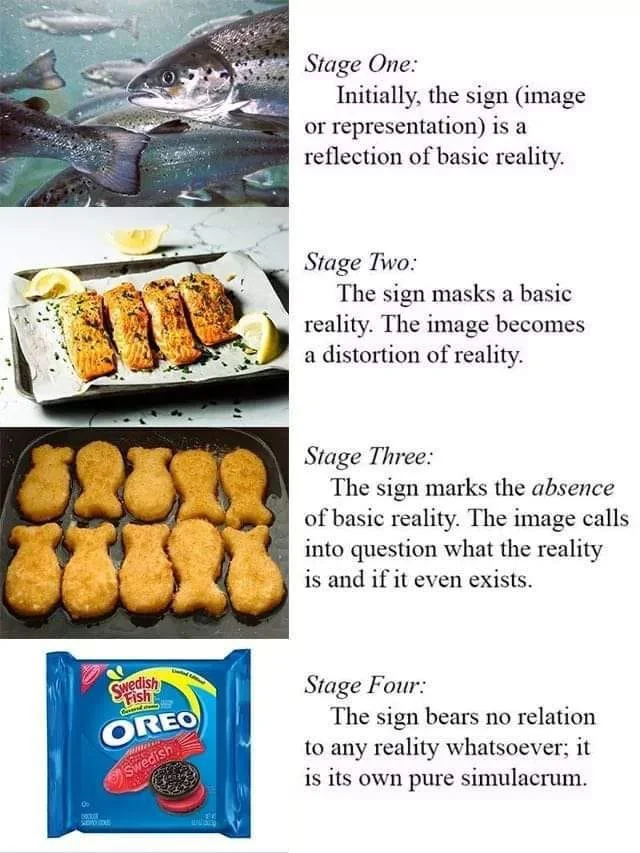

This bog is primarily about Sesquipedalian Loquaciousness. TVTropes gives a great definition:
"smart" characters using long words when short ones would be better
One of my favourite examples is an early game bandit from Arcanum: Of Steamworks and Magick Obscura.
He talks like this for the entire conversation, and your character keeps getting dialogue options that make fun of him without him picking up on it. It's the best.
Of course in real life, people aren't this insane with their thesaurus use, but the trope of the idiot with a thesaurus thinking that simply using big words makes you smart is a well-known one, in both fiction and waking life.
The thing is though, people like this think using big words is a good way to signal intelligence for a reason, and I don't think it's a misguided one. I think using weird synonyms is an art that has had its reputation ruined by the many Mr. Witlesses of the world.
Recently, I've been thinking a lot about writing. I think that happens when you spend too much time reading instead of actually living your life. That's not unique to reading - I found it was common to find online movie reviewers who watch a lot of movies talk about wanting to direct their own films. I would guess that one of the reasons "YouTuber" is one of the most desired careers among kids is because they watch a lot of YouTube.
Ultimately, instead of writing my Great American Novel, I decided to just cough up some of my dank, soupy, mosquito-infested thoughts all over a static webpage. That's okay though, this isn't a blog, it's a bog. If you came here without insect repellent, that's on you.
Anyways, one of my favourite books is Blood Meridian, and the author - Cormac McCarthy - has writing that I really admire. To address the topic of this bog: I think he uses synonyms really well.
There's a part of the book where this really intelligent character is talking to kind of a simple bandit, and uses a less common word for "ruler", as in overlord...
The judge had taken to riding ahead with one of the Delawares and he carried his rifle loaded with the small hard seeds of the nopal fruit and in the evening he would dress expertly the colorful birds he'd shot, rubbing the skins with gunpowder and stuffing them with balls of dried grass and packing them away in his wallets. He pressed the leaves of trees and plants into his book and he stalked tiptoe the mountain butterflies with his shirt outheld in both hands, speaking to them in a low whisper, no curious study himself. Toadvine sat watching him as he made his notations in the ledger, holding the book toward the fire for the light, and he asked him what was his purpose in all this.
The judge's quill ceased its scratching. He looked at Toadvine. Then he continued to write again.
Toadvine spat into the fire.
The judge wrote on and then he folded the ledger shut and laid it to one side and pressed his hands together and passed them down over his nose and mouth and placed them palm down on his knees.
Whatever exists, he said. Whatever in creation exists without my knowledge exists without my consent.
He looked about at the dark forest in which they were bivouacked. He nodded toward the specimens he'd collected. These anonymous creatures, he said, may seem little or nothing in the world. Yet the smallest crumb can devour us. Any smallest thing beneath yon rock out of men's knowing. Only nature can enslave man and only when the existence of each last entity is routed out and made to stand naked before him will he be properly suzerain of the earth.
What's a suzerain?
A keeper. A keeper or overlord.
Why not say keeper then?
Because he is a special kind of keeper. A suzerain rules even where there are other rulers. His authority countermands local judgements.
- Cormac McCarthy. Blood Meridian; or, The Evening Redness in the West
...and it turns out he had a purpose for wanting to use this specific synonym.
The judge is this really sophisticated kind of guy. He's the kind of guy to name his gun Et in Arcadia ego. For someone who makes their living killing and scalping native Americans, he is unnaturally intelligent. He's an something of a scholar of the natural sciences, he speaks every language that ever needs to be spoken by any of the gang, he's an expert dancer, the list goes on. This is further emphasized by the fact that the rest of the people in this gang he's in are exactly the kind of simple western bandit that you would expect to find doing this kind of work.
It's common for these kinds of sophisticated characters to use really expansive vocabularies for the sake of making a show of their knowledge. The author can use their loquaciousness to signal "this character is intelligent". But the judge (and his author) make a point to use synonyms to better capture semantic meaning.
Throughout the book McCarthy uses a lot of bizarre words that you kinda have to look up if you're a normal person. As another example, in the same passage, he uses the phrase bivouacked.
But it doesn't feel stupid, because once I understand the word:
I have a perfect image of what kind of camp they have made.
If you were to ask McCarthy while you were reading, I imagine the exchange would go something like this:
What's a bivouac?
A camp. A camp or temporary shelter.
Why not say camp then?
Because this is a special kind of camp. A bivouac is a temporary encampment under little or no shelter. Its makeshiftness exceeds that of other encampments.
His bizarre synonyms don't come off as being pretentious, because his word choice serves the purpose of best capturing the semantic meaning behind the words. The word choice is happening with consciousness and deliberation - with lucidity, I would say. As a plus - lexical lucidity just has that nice alliteration. And "lexicon" kinda has a feeling of precision to it - like you're referring to a tailored spellbook rather than a haphazard collection of words.
For me, this brings to mind a somewhat related 4chan post from a million years ago:
The idea of stupid people thinking smart people are indistinguishable from wizards I feel is like the root issue of the sesquipedalian loquaciousness trope.
The trope acts as a shortcut to writing a character that the audience should think is intelligent, without actually making the character do intelligent things. It's a really poorly applied "show don't tell". Having an "intelligent" character talk like there's a thesaurus that every fourth word they speak has to be filtered through is one level removed from just straight up saying "John is very intelligent and regularly intelligences around with the intelligentsia". It's not exactly the same as just telling, but it's not very good.
Naturally, I think people do the same thing these characters do because their writers are trying to use the same shortcut. I'm not talking about God here (well, I guess I don't know really) - but themselves. You are kind of the author of your own character.
I think most people try to "write" themselves into being a character they would like. You identify some character trait and go "I want to be like that", and then you try to emulate it. It's only natural, and I don't think there's anything wrong with it. I certainly do it all the time.
People like people who are like themselves, or are like how they would like to be.
- Tony Robbins
I think wanting to be intelligent is admirable. The problem is that the sesquipedalian loquaciousness serves as a simulacrum of intelligence.
How many stages we are removed from loquaciousness being a marker for intelligence depends on the person (or character).
To be clear, I don't think it's wrong to purposefully act on a certain simulacra level. You can use words however you want.
The reason piecing this together is useful is that if you identify the character trait "intelligent", and your goal is to adopt that character trait; and then you use "fancy words" as a way to emulate that character trait, then you've failed at your goal. Because now you haven't adopted intelligence, you've just adopted fancy words.
and i personally feel like that's a little cringe, and i really don't want to do that
When McCarthy brings out the evocative synonyms, I don't think he goes and looks at every instance of a dull word and looks through a thesaurus for a smarter sounding word. Anyone can tell when someone is doing the old "look up the word and pick a fancier word" deal. When people have impressive vocabularies, it's not the size of the vocabulary that is impressive, but their ability to select the right one to best capture the semantic meaning.
I think the best way to really expand your vocabulary is to read things like the previous "bivouacked" example, look up the word, and really take in how that word is different from the simplest version of the word you could choose to use (in this case: "camp"), like how the judge distinguishes "suzerain" from "keeper".
If you're a math nerd and when you think of "a really vast amount of things", you think Googol, then you'll end up thinking of "Googol" when you're naming your search engine that is intended to provide a really vast amount of information.
I think that by just chewing and digesting and really making these words a part of you, you eventually reach a point where when you're looking for the words to capture a certain idea, the fancy words just start to flow naturally from your full-sized aortic pump.